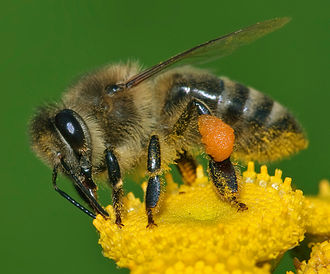

A honey bee (or honeybee) is a eusocial, flying insect within the genus Apis of the bee clade. They are known for construction of perennial, colonial nests from wax, for the large size of their colonies, and for their surplus production and storage of honey, distinguishing their hives as a prized foraging target of many animals, including honey badgers, bears and human hunter-gatherers. In the early 21st century, only seven species of honey bee are recognized, with a total of 44 subspecies, though historically seven to eleven species are recognized. The best known honey bee is the Western honey bee which has been domesticated for honey production and crop pollination; modern humans also value the wax for candlemaking and other crafts. Honey bees represent only a small fraction of the roughly 20,000 known species of bees. Some other types of related bees produce and store honey and have been kept by humans for that purpose, including the stingless honey bees, but only members of the genus Apis are true honey bees. The study of bees, which includes the study of honey bees, is known as melittology.
Honey bees |
|||||||||||
|---|---|---|---|---|---|---|---|---|---|---|---|
| Scientific classification | |||||||||||
|  | |||||||||||
| Kingdom: | Animalia | ||||||||||
| Phylum: | Euarthropoda | ||||||||||
| Class: | Insecta | ||||||||||
| Order: | Hymenoptera | ||||||||||
| Family: | Apidae | ||||||||||
| Subfamily: | Apinae | ||||||||||
| Tribe: | Apini | ||||||||||
| Latreille, 1802 | |||||||||||
| Genus: | Apis | ||||||||||
| Linnaeus, 1758 | |||||||||||
| Species | |||||||||||